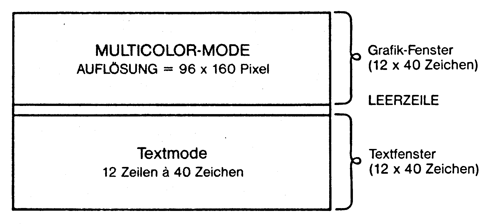
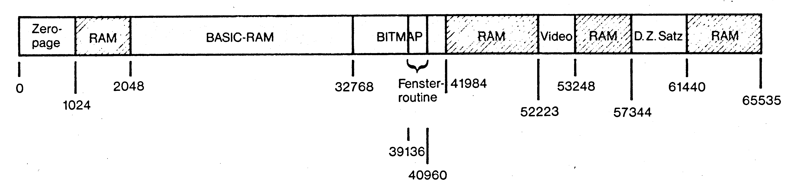

Super-Grafik für Adventures
In diesem Artikel wollen wir wichtige Tips für diejenigen bringen, die ihr Adventure grafisch aufmöbeln wollen. Sie können dann also nicht nur professionelle Text- sondern auch Grafikadventures programmieren.
Wer heute ein außergewöhnlich gutes Adventure schreiben will, muß sich früher oder später die Frage stellen, ob es sinnvoll ist, das Spiel mit Grafik zu versehen oder nicht. Letztendlich ist diese Entscheidung auch darüber ausschlaggebend, ob zirka 8 KByte RAM für eine Bit-Map oder für einen riesigen Wortschatz ausgenutzt werden. Die letzten Abenteuerspiele, die auf den Markt gekommen sind, haben auch eine traurige Tatsache immer wieder bestätigt: Die Spiele, die mit fantastischer Grafik ausgestattet sind, lassen immer am Wortschatz schwer zu wünschen übrig. Ich denke hier zum Beispiel an das Spiel Asylum: Die Grafik ist zwar überwältigend, aber die Spiellust geht spätestens dann verloren, wenn man zum zehntenmal die Antwort »You can not do that« erhalten hat und niemals eine detaillierte Erklärung, warum etwas nicht geht. Unglücklicherweise enthält das Spiel auch noch eine Dia-Show-Funktion, die es ermöglicht, zu Beginn des Spiels alle Bilder anzuschauen. Dadurch wird schließlich auch noch der letzte Funke Spiellust zerstört – nämlich die Überraschung beim Entdecken eines neuen Bildes. Wir wollen uns zunächst jedoch nicht mit Speicherplatzproblemen im Bereich HiRes-Bilder/Wortschatz beschäftigen, sondern vielmehr die folgende Frage klären: Wie macht man fantastische HiRes-Bilder für Grafikadventures?
Jeder von Ihnen hat bestimmt schon einmal mit Malprogrammen wie zum Beispiel Koala Painter oder Paint Magic etc. gearbeitet. Begabte Grafiker kommen damit oft auch zu guten Resultaten. Allerdings ist das »per Hand Zeichnen« unheimlich zeitaufwendig. Zugegeben, es gibt zahlreiche Zeichenprogramme, die das Arbeiten mit Grafiktabletts, Trackball, Joystick, Maus und Lightpen unterstützen, aber alle diese Methoden erfordern unheimliches Geschick zum Zeichnen – und das haben nur sehr wenige Programmierer (zu denen auch ich leider nicht gehöre). Die Lösung allen Übels heißt schließlich: Video Digitizer. Video-Digitizer sind Geräte, mit denen es möglich ist, Bilder von einer Kamera beziehungsweise einem Videogerät in den Speicher eines Computers einzulesen (sprich digitalisieren). Diese Geräte waren bis vor kurzem sehr teuer (zirka 600 Mark), sind jetzt aber schon relativ erschwinglich. Gebrauchtgeräte gibt es schon ab 200 Mark.
Leider ist es mit dem Video-Digitizer allein noch lange nicht getan. Neben einer Computeranlage benötigt man auch noch eine Video-Kamera. Für so eine Schwarzweiß-Kamera muß man dann noch einmal zirka 600 Mark auf den Tisch legen. Es lohnt sich jedoch in den seltensten Fällen, eine solche Kamera zu kaufen, die lediglich zum Arbeiten mit dem Digitizer verwendbar ist.
Eine andere Möglichkeit ist es, einen Videorecorder an den Digitizer anzuschließen. Dies hat jedoch nur dann einen Sinn, wenn der Recorder über ein ausgezeichnetes Standbild verfügt. An einen Videorecorder mit Standbild zu gelangen beziehungsweise sich einen von Freunden auszuleihen, dürfte kein allzu großes Problem sein. Anders die Kamera. Gute Videokameras sind im Moment noch dermaßen teuer, daß sie nur in wenigen Haushalten zu finden sind. Es gibt jedoch zahlreiche Videotheken und Video-Geschäfte, in denen man Kameras (und natürlich auch Recorder) ausleihen kann. Wer Glück hat, findet bestimmt ein Geschäft in dem man eine Videoanlage für weniger als 50 DM ein Wochenende lang ausleihen kann. Alles, was Sie dann noch benötigen, sind Bildvorlagen zum Digitalisieren. Sind die Bilder erst einmal im Computer, ist es ein leichtes, sie nach eigenen Wünschen zu manipulieren, umzufärben und schließlich ins eigene Adventure einzubauen. Man benötigt also noch ein gutes Malprogramm, um die digitalisierten Bilder vernünftig bearbeiten zu können. Leider hat jedes Malprogramm Vorteile und Nachteile – und die Bilder der einzelnen Programme sind natürlich absolut inkompatibel untereinander.
Viele Digitalisierer speichern im Koala-Painter-Format ab. Als Zeichenprogramm würde ich aber Paint Magic empfehlen. Deswegen nun ein kleines Listing zum Verwandeln von Koala- in Paint-Magic-Bilder (Listing 1). Das kurze Listing erklärt sich von selbst.
In manchen Fällen ist es nötig, daß die Farbeinstellungen nachträglich per Hand korrigiert werden müssen.
Paint Magic Diashow
Im folgenden wird erklärt, wie Sie Paint-Magic-Bilder innerhalb von Basic-Programmen laden und darstellen können. Die Paint-Magic-Bilder können übrigens auch direkt geladen werden und mittels RUN betrachtet werden, da vor jedem Bild ein kleines Programm zur Bilddarstellung mit gespeichert wird.
Und so werden die Bilder innerhalb von Programmen geladen und dargestellt:
Zunächst müssen sie in einer neuen Form gespeichert werden. Dazu:
- Bild laden.
- Bild mit »RUN« einschalten.
- Bild mittels RUN-STOP/RESTORE ausschalten.
- POKE 24565,96 im Direktmodus eingeben.
- Den Bereich von hex 4000 - 6400 (=Bild) mit einem Monitor speichern.
Das so gespeicherte Paint-Magic-Bild kann jetzt innerhalb eines Programmes absolut geladen werden (,8,1) und mittels SYS 24513 dargestellt werden.
Um das Bild wieder auszuschalten, sind folgende POKEs notwendig:
POKE 53272,21 : POKE 56576,151 : POKE 53265,27
POKE 53270,200So lassen sich ganz einfach Dia-Shows herstellen.
Fenstertechnik auf dem C 64
Im folgenden zeige ich Ihnen, wie Sie HiRes-Bilder in Ihre eigenen Adventures einbauen können. Die Idee besteht darin, den Bildschirm des C 64 in eine Grafik und in ein Textfenster zu unterteilen.
Bild 1 zeigt, wie der Bildschirm unterteilt wird. In der oberen Hälfte wird ein Multicolor-HiRes-Fenster mit der Auflösung 96 mal 160 Bildpunkte dargestellt.

Die 13. Textzeile bleibt als Trennung leer. Die unteren 12 Zeilen sind Text-Bildschirm.
Die Routine ist speziell für Adventures gedacht, die auf relativer Dateien-Basis und mit einem deutschen Zeichensatz arbeiten. Das MSE-Listing zur Fensterroutine finden Sie in Listing 2.
Wie bereits gesagt, arbeitet die Routine auch dann, wenn der deutsche Zeichensatz verwendet wird. Das Ladeprogramm, mit dem zu Beginn eines Adventures die Fenster-Routine geladen und der deutsche Zeichensatz geladen und aktiviert wird, finden Sie in Listing 3.
In Zeile 30 wird der Zeiger auf die Speicher-Obergrenze verschoben. Dies ist notwendig, um die Routine, die teils den Basic-RAM beansprucht, vor Überschreiben durch Basic-Programme zu schützen.
Bild 2 zeigt, wie es jetzt im Speicher des C 64 aussieht. Die Fenster-Routine nimmt schon ziemlich viel RAM in Anspruch:

| 32768-39135 | Unterbringung der Bit-Map |
| 39136-40959 | Hier steht die eigentliche Fenster-Routine |
| 40960-41983 | Farbinformationen für das HiRes-Bild |
Jetzt stehen nur noch 30717 KByte Basic-RAM zur Verfügung. Die schräg gestrichelten Bereiche sind die noch freien RAM-Bereiche. Wer Adventures mit Grafik-Fenster programmieren will, muß also ziemlich hart kalkulieren. Aufgrund der Adventure-Programmiertechniken, die Sie bisher in diesem Kurs kennengelernt haben, können Sie den Verlust des Fenster-RAMs durch geschickte Programmierung wieder ausgleichen.
Hier noch ein Tip für alle ausgefuchsten Programmierer, die kein Byte ungenutzt sein lassen wollen: Der RAM-Bereich, der für Bit-Map und Farbinfo benutzt wird, wird eigentlich gar nicht ganz beansprucht, da unsere Fensterbilder nur eine Auflösung von 96 mal 160 haben. Das heißt, in den RAM-Bereichen von 36929-39135 und 41480-41982 können noch kleine Maschinenroutinen untergebracht werden. Und so wird mit der Fensterroutine gearbeitet:
Bei ausgeschaltetem Fenster steht der ganze Bildschirm als Textfenster zur Verfügung. Mittels SYS 39937 wird das Fenster eingeschaltet beziehungsweise eingeblendet. SYS 39940 schaltet das Fenster wieder aus. Der Text beziehungsweise Bildschirminhalt, der sich unter dem eingeblendeten Fenster befand, ist jetzt wieder sichtbar. Allerdings ist dieser Text einfarbig. Die Farbe (0-15), die der Text nach Ausschalten des HiRes-Fensters annimmt, steht in Speicherzelle 40175. Mittels POKE 40175,FARBE kann also variiert werden. Auch Text, der unter das eingeschaltete Fenster gescrollt wird, ist nach Ausschalten des Fensters wieder sichtbar. Das Fenster ist völlig Interrupt-gesteuert – deshalb flimmert die unterste Zeile manchmal ein wenig, was jedoch kaum stört.
Durch die Interrupt-Programmierung ist es jetzt auch nicht mehr so einfach, zwischen dem Groß/klein- und Groß/grafik-Zeichensatz umzuschalten. Hier muß auch wieder gePOKEt werden. Und zwar POKE 40120,58 um den Groß/klein-Zeichensatz und POKE 40120,56 um den Groß/grafik-Zeichensatz einzuschalten. Jetzt müssen Sie natürlich noch wissen, wie man Fenstergrafiken lädt. Hierzu dient ein kleines Programm, das Paint-Magic ins Fensterformat umwandelt. Sie benötigen also Paint-Magic-Bilder, wobei das spätere Fensterbild die oberen 12 Zeilen (beziehungsweise 96 vertikale Bildpunkte) des Paint-Magic-Bildes einnimmt.
Das Programm in Listing 4 funktioniert ganz einfach: Zuerst muß die Diskette, auf der sich das Paint-Magic-Bild befindet, eingelegt werden. Nach dem Laden wird das Programm auf einer Zieldiskette gespeichert. Wichtig ist dabei, daß der Filename des Fensterbildes nur ein einziges Zeichen lang sein darf. Außerdem müssen die Hintergrundfarbe (1. Farbe) des Bildes sowie die 4. Farbe angegeben werden – also mit Hilfe von Paint-Magic lesen und notieren. Auf einer Diskette finden 30 Bilder im Fensterformat Platz. Jetzt müssen Sie nur noch wissen, wie Bilder mit Hilfe der Fensterroutine geladen werden:
POKE 780, ASC("Zeichen") : SYS 39943Für »Zeichen« muß der Filename des Bildes (der aus nur einem Zeichen bestehen darf) eingesetzt werden.
Probleme mit der Fensterroutine
Bei eingeschaltetem Fenster kommt es zu Schwierigkeiten bei Disk-Operationen (zum Beispiel Laden von relativen Files): der Bildschirm beginnt dann wild zu flackern. Dies liegt daran, daß Diskettenoperationen störend auf programmierte Video-Interrupts wirken. Vielleicht kann man dies sogar als einen Fehler im C 64-Betriebssystem bezeichnen. Es ist möglich, Fensterroutinen beziehungsweise Interrupts zu programmieren, bei denen Diskettenoperationen nicht stören. Dazu muß jedoch das Betriebssystem vom ROM ins RAM kopiert und dort verändert werden. Für diese Lösung habe ich mich jedoch nicht entschieden, weil dann zuviel RAM-Speicher verlorengegangen wäre. Man muß vor Diskettenoperationen das Fenster aus- und erst später wieder einschalten.
Zusammenfassung
| Fenster einschalten: | SYS 39937 |
| Fenster ausschalten: | SYS 39940 |
| Bild laden: | POKE 780,ASC("Zeichen"):SYS 39943 |
| Zeichenfarbe hinter Fenster: | POKE 40175,FARBE |
| Groß/klein-Zeichensatz einschalten: | POKE 40120,58 |
| Groß/grafik-Zeichensatz einschalten: | POKE 40120,56 |
Viel Spaß beim Fensterln!